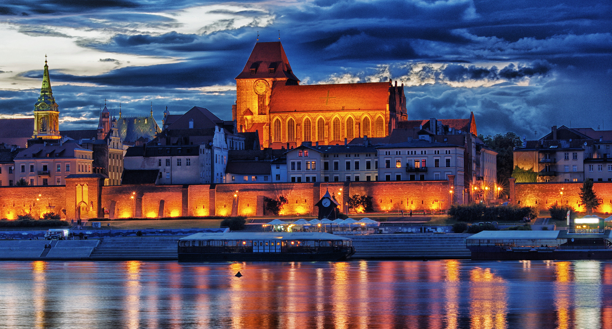
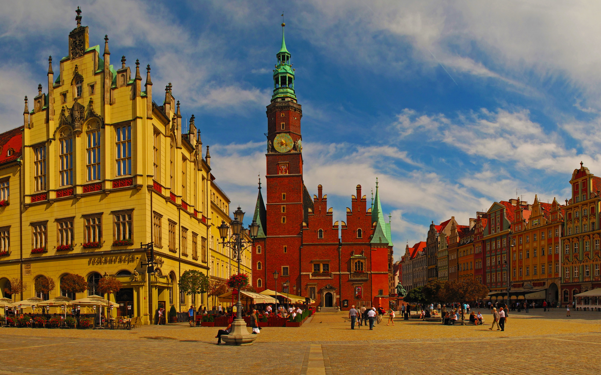
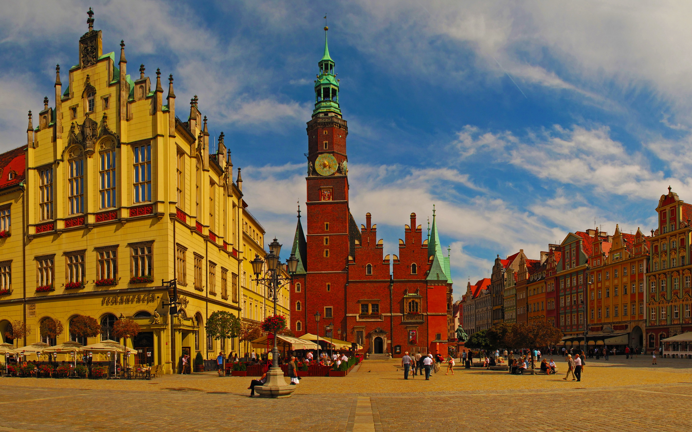

Welcome
Общая информация
Польша занимает территорию 312 679 км, по этому показателю страна находится на 69-м месте в мире и десятом месте в Европе. Численность населения — 38 млн человек (33-я в мире). Страна разделена на 16 воеводств, которые в свою очередь делятся на повяты (уезды) и гмины (волости). Датой создания первого польского государства считается 966 год, когда Мешко I принял христианство. Польша стала королевством в 1025 году, а в 1569 году объединилась с Великим княжеством Литовским (I Речь Посполитая). В 1795 году в результате трёх разделов, когда территория была разделена между Пруссией, Австрией и Россией, Польское государство перестало существовать. Во время наполеоновских войн в период 1807—1813 гг. существовало Герцогство Варшавское, бо?льшая часть которого в 1815 году вошла в состав России в качестве так называемого Царства Польского. Польша вновь обрела независимость в 1918 году после Первой мировой войны (II Речь Посполитая), но в 1939 году была разделена между Германией и СССР. После войны Польша в новых границах (без Западной Белоруссии и Западной Украины, но с значительными территориальными приобретениями за счёт Германии) стала «страной народной демократии», зависимой от СССР (Польская Народная Республика). В 1989 году произошли изменения в политической системе, переход к рыночной экономике (III Речь Посполитая). С 12 марта 1999 года является членом НАТО, с 1 мая 2004 года — член Европейского союза. 21 декабря 2007 года вошла в Шенгенскую зону.Какой-то текст
Какой-то текст
1
2
3
Cколько?
Krakov
 
